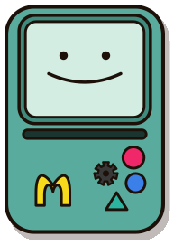

把一个想法，变成下一步。
选择这张卡片，试试复制结构和样式。
这段内容由你的真实点击展开，可以在 Pro 中录制。
结构、样式和定位线索，一起交给你的 AI。
Lite / Pro 免费使用，无需账号。
把上面的 SourcePin 标签拖到浏览器书签栏。

LITE先显示浏览器书签栏，把 SourcePin 标签拖进去。无需下载扩展或开启开发者模式。
点击书签栏中的 SourcePin。游戏机出现后，点击组件选择，Shift 点击多选。
复制上下文给 AI；黄色 M 保存完整 Markdown。Esc 一次收起一层：先关面板，再取消选择，最后才退出。
引导仅在这里首次体验时显示。机身右下角的齿轮图形打开设置；左下角绿色图标显示 Lite / Pro 开关。
选择这张卡片，试试复制结构和样式。
这段内容由你的真实点击展开，可以在 Pro 中录制。
游戏机是网页右下角出现的那个小机器人。下面按位置说明每个按钮，以及点下去之后会发生什么。
单击、或聚焦后按 Enter，打开预览窗。选中组件后屏幕会显示状态、定位是否准确和内容摘要；左下角出现「已确认 · 声明」时，点它可以重新打开导出声明。
把 15 KB 摘要复制到剪贴板，也就是粘贴给 AI 的那段提示词。复制成功后圆钮变绿、屏幕显示「提示词已复制」。
下载完整内容：选组件时是 Markdown，整页 DOM 时是离线 ZIP。快捷键 ⌘ / Ctrl + Shift + M 等效。
打开设置面板：输出语言、最大节点数、最大深度、包含隐藏内容，以及录制和重新选择。修改后立即生效。
显示或隐藏机身下方的 Switch，用 Switch 在 Lite 和 Pro 之间切换，默认隐藏。LITE / PRO 字样跟着 Switch 一起出现、一起消失，关闭后机身下方不留任何文字。
打开画面采集面板：截取组件、截取当前视口、捕获整页 DOM、追加当前视口。按住机身上方横条可以拖动整只游戏机。
Mac 用 ⌘，Windows / Linux 用 Ctrl。下面这些键只在游戏机已经唤起、并且已经选中组件时才接管按键，其余时候浏览器照常工作。
把这次点击的组件加进同一次采集；对它再 Shift 点一次就移出去。第一次把鼠标停到组件上时，提示条会提醒这个组合。
最多 10 个。已经满 10 个时，第 11 次点击保留前 10 个，并提示「最多选择 10 个目标，已保留前 10 个」。和左侧圆形按钮同一个动作：把要粘贴给 AI 的那段提示词放进剪贴板。复制成功后圆钮变绿、屏幕显示「提示词已复制」。
本次唤起里的第一次复制或下载会先弹一次导出确认，点「继续导出」才真正执行。一个按键做完两件事：先复制摘要，再保存一张组件截图。
需要 Chrome 扩展版。书签版会照常复制摘要，然后提示「摘要已复制；截图需要 Chrome 扩展版」。和黄色 M 按钮等效：选组件时下载 Markdown；采过整页 DOM 时下载可离线打开的 ZIP。
扩展版里这个组合同时是全局快捷键，功能相同，可在chrome://extensions/shortcuts 改成别的键。只收掉最上面那一层：有面板打开就先关面板（选择与已采集内容都保留），没有面板就取消选择。两层都没有时会提示「再按 Esc 退出」，再按一次才真正退出游戏机。
在导出确认窗上按 Esc 等于点「取消」：这次导出不做，选择保留。用 Tab 把焦点移到屏幕，按 Enter 打开预览。鼠标上单击或双击屏幕是同一个入口。
预览里是即将复制的那份 15 KB 摘要，不是全文；全文只能通过下载得到。chrome://extensions/shortcuts 里改。创建一个名为 SourcePin 的书签，把下方完整代码填入书签的网址字段。